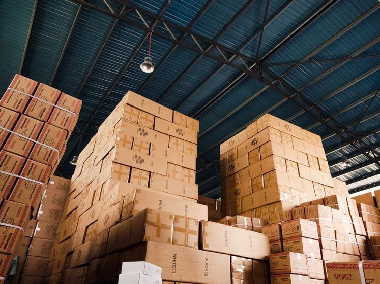

Logística reversa: o que acontece com o produto depois que você devolve
Da etiqueta de devolução ao reembolso: entenda o caminho que o produto percorre de volta.

Você clicou em "solicitar devolução", imprimiu a etiqueta, colou na caixa e despachou. Da sua parte, o processo terminou ali. Mas para a loja, o produto que você devolveu ainda vai passar por um caminho inteiro antes de virar, de fato, o valor que cai de volta na sua conta ou no seu cartão. Esse caminho tem nome: logística reversa. E entender como ele funciona explica por que o reembolso quase nunca é instantâneo — e o que fazer se ele atrasar demais.
O que é logística reversa, na prática
Logística reversa é qualquer fluxo que move um produto do consumidor de volta para a empresa — seja para devolução, troca, reparo ou descarte. É basicamente a cadeia de entrega funcionando ao contrário: em vez de sair do centro de distribuição e chegar até você, o pacote sai da sua casa e precisa voltar, ser conferido e reintegrado (ou descartado) pelo lado da loja.
Para o consumidor, o que aparece na tela costuma ser só um status genérico como "devolução em andamento" ou "em análise". Por trás disso, existem etapas concretas, e cada uma tem um motivo — e um tempo — próprio.
As etapas, uma por uma
1. Geração da etiqueta e postagem
Tudo começa quando a devolução é aprovada e a loja gera uma etiqueta de retorno (pré-paga, na maioria dos casos, especialmente dentro do prazo de arrependimento previsto pelo Código de Defesa do Consumidor). Você embala o produto — de preferência na caixa original, com todos os acessórios — e despacha em um ponto de postagem ou aguarda a coleta.
Esse é o único trecho do processo em que o consumidor ainda tem visibilidade direta: o rastreio da devolução funciona como qualquer outro rastreio, mostrando "objeto postado", "em trânsito" etc.
2. Trânsito até o centro de distribuição (ou hub de devolução)
Diferente de uma entrega normal, a devolução nem sempre vai para o mesmo centro de distribuição de onde o produto saiu. Muitas operações usam um hub de devolução dedicado — um centro separado, às vezes terceirizado, especializado só em processar retornos. Isso existe porque devolução exige um fluxo diferente: triagem, inspeção, decisão sobre o destino do item. Misturar isso com a operação de saída (que é otimizada para velocidade) travaria as duas pontas.
3. Recebimento e conferência física
Quando o pacote chega, ele é aberto e conferido item a item. A equipe confirma:
- Se o produto dentro da caixa é o mesmo que consta na etiqueta/pedido;
- Se veio completo (acessórios, manual, brindes, embalagem);
- Se está em condição de revenda, ou se apresenta uso, dano ou violação de lacre;
- Se o motivo declarado pelo comprador bate com o que foi encontrado (ex.: "veio com defeito" vs. produto sem nenhum sinal de mau funcionamento).
Esse é o gargalo mais demorado do processo inteiro. Diferente de despachar um pedido — que pode ser automatizado quase de ponta a ponta — receber uma devolução quase sempre passa por conferência humana, porque é aqui que a loja decide se o reembolso é integral, parcial ou até recusado (em casos de produto danificado por mau uso, por exemplo).
Como regra geral, a etapa de conferência costuma levar entre 2 e 7 dias úteis contados a partir do recebimento no centro de distribuição — não da data em que você postou o pacote. É essa diferença de referência que mais gera a sensação de "sumiu".
4. Classificação e destino do produto
Depois de conferido, o item recebe um destino. Simplificando, os caminhos mais comuns são:
| Condição do produto | Destino provável |
|---|---|
| Sem uso, lacre intacto, embalagem original | Volta ao estoque para revenda |
| Aberto mas sem dano, faltando embalagem | Canal de outlet / segunda linha |
| Com defeito de fabricação | Devolvido ao fornecedor/fabricante ou reparo |
| Danificado por uso ou transporte | Descarte, doação ou reciclagem, conforme categoria |
Esse destino também influencia o prazo: um produto que volta direto ao estoque costuma liberar reembolso mais rápido do que um que precisa ser avaliado por um setor técnico (eletrônicos, por exemplo).
5. Liberação do reembolso
Só depois que o item passa pela conferência é que o sistema libera o reembolso — e aqui entra outra variável que foge do controle da loja: o meio de pagamento. PIX costuma refletir em minutos ou poucas horas após a liberação; estorno em cartão de crédito depende da operadora e normalmente aparece em 1 ou 2 faturas seguintes; boleto e outros meios variam mais. Ou seja: mesmo quando a loja "libera" o reembolso no mesmo dia, o valor pode demorar a aparecer na sua conta por um motivo que não é mais dela.
Por que o reembolso demora mais que a compra
Uma compra normal tem um fluxo enxuto: pagamento aprovado, pedido separado, despachado. A devolução tem uma etapa a mais que a compra não tem — a decisão humana sobre a condição do produto — e ela não pode ser pulada, porque é justamente o que protege tanto o consumidor (garantindo que o reembolso seja justo) quanto a loja (evitando fraude de devolução, como troca do item por outro ou uso indevido antes de devolver).
Vale lembrar também que, para compras feitas fora do estabelecimento físico (como pela internet), o prazo de arrependimento é de 7 dias corridos a contar do recebimento, conforme o CDC — mas esse prazo é para você solicitar a devolução, não é o prazo em que ela será processada pela loja. Para o passo a passo de como acionar esse direito, vale a leitura do nosso guia sobre troca e devolução pelo Código de Defesa do Consumidor.
O que ajuda a acelerar o processo do seu lado
- Embalar o produto o mais próximo possível do estado original — isso reduz o tempo de conferência.
- Guardar o comprovante de postagem até confirmar o reembolso na conta.
- Acompanhar o status pelo mesmo canal usado na compra, em vez de abrir múltiplos chamados em paralelo (isso não acelera e pode até confundir o atendimento).
- Se o prazo informado pela loja estourar, entrar em contato formalmente antes de contestar a cobrança junto ao banco ou operadora do cartão.
Se o problema não é a devolução em si, mas um pedido que nunca chegou ou sumiu no meio do caminho, o roteiro é outro — vale conferir nosso guia sobre o que fazer quando um pedido está atrasado ou sumiu.
Acompanhando tudo em um só lugar
Boa parte da ansiedade em torno de devoluções vem de checar status em abas separadas — o rastreio dos Correios/transportadora de um lado, o painel da loja de outro, o e-mail de confirmação em uma terceira aba. Centralizar isso ajuda a enxergar em que etapa exata o processo está, sem depender de atualizações manuais. É esse tipo de organização que o app PedidoCerto se propõe a resolver: reunir o status de compras e devoluções de lojas diferentes em um único lugar.
Conclusão
Logística reversa não é um "buraco negro" onde o produto desaparece — é um processo com etapas previsíveis, só que menos visíveis do que o envio de uma compra normal. Saber que existe uma etapa de conferência física, que ela é o principal ponto de demora, e que o meio de pagamento também interfere no prazo final ajuda a calibrar a expectativa e a saber quando, de fato, vale a pena cobrar a loja.